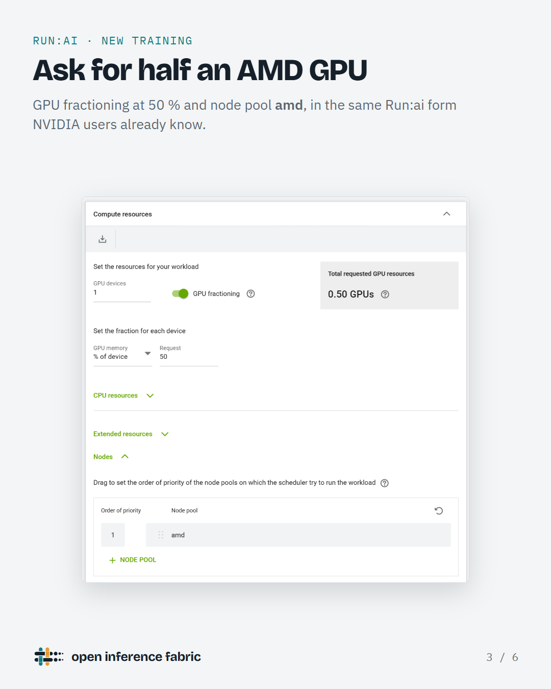
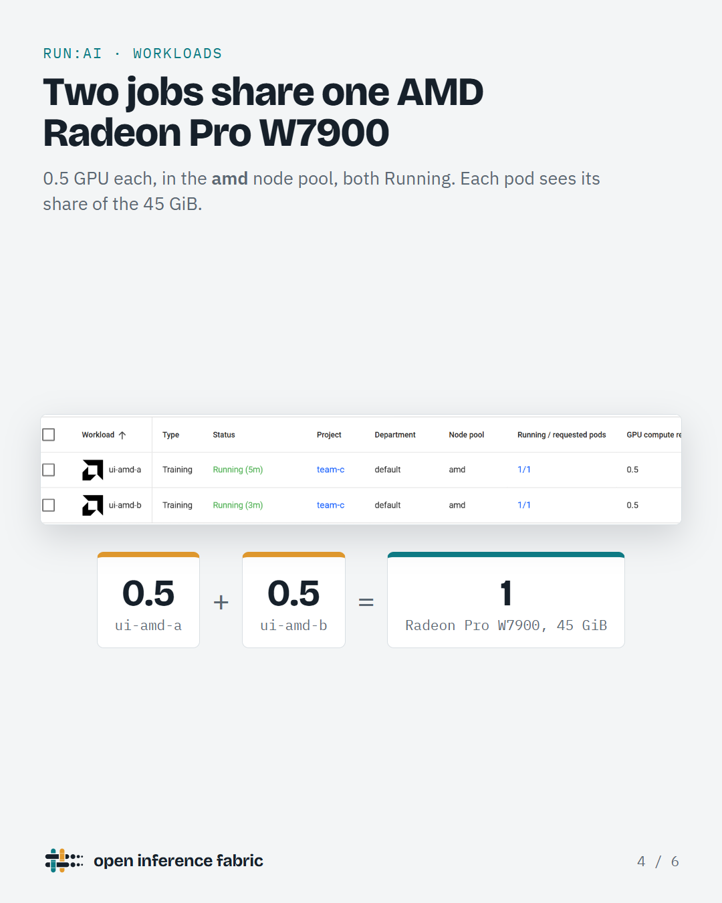
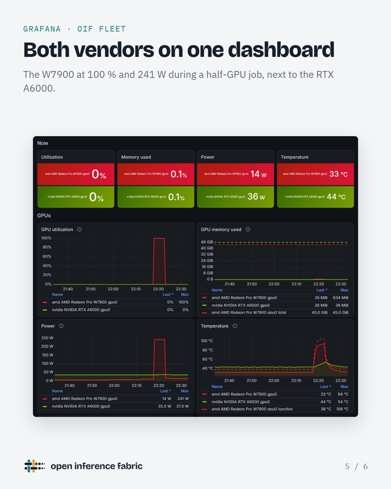

Open Inference Fabric turns GPU servers into one open-source platform to schedule, serve, benchmark and observe language models. One installer, every step tested on real hardware and documented.
sudo ./oif install builds the platform layer by layer. Every change it makes to a host is recorded, and oif uninstall takes it back out.
When NVIDIA open-sourced Run:ai in October 2026, its GPU inventory, interface and GPU fractions were built for NVIDIA. OIF adds AMD: GPUs in the node inventory, a node pool and quota per vendor so a CUDA job never lands on an AMD GPU, and fractional AMD GPUs. Two workloads can share one Radeon Pro W7900 at half a GPU each, with soft memory isolation for trusted teams.



OIF patches are proposed upstream with lab evidence, so everyone running Run:ai or the KAI Scheduler benefits. The full list, with issues, is in UPSTREAM.md.
| Pull request | Change | State |
|---|---|---|
| run-ai #3950 | cluster-sync: count AMD GPUs (amd.com/gpu) in the node inventory | in review |
| run-ai #3948 | frontend: AMD icon for workloads on ROCm images | in review |
| run-ai #3949 | go-operator: report GPU fractions unavailable when the daemons have no target nodes | in review |
| KAI #2557 | binder: do not modify the configured reservation pod resources | in review |
Run the guides on NVIDIA, AMD or mixed GPU servers and tell us what breaks.
Read and test the upstream pull requests above. Reviews help them land for everyone.
Go, Kubernetes, ROCm, CUDA or docs: start with CONTRIBUTING.md.